**Homework 5**
Student name: Virginie Piskin
Sciper number: 300542
Microfacet BRDF (30 points)
===========================
Evaluating the Microfacet BRDF
------------------------------
Evaluating the Microfacet BRDF is pretty straight forward, we just need to follow the formulas given in the assignment.
Sampling the Microfacet BRDF
------------------------------
The sampling is a bit tricky as we need to come up with a method to reuse the random variables.
For that we can use the value of ks which belongs to [0,1] to rescale the random variable.
The statistics tests won't pass until this method is righfully implemented.
Both the smooth and rough images look right, the smooth material being shinier and the rough material remaining matte.
Validation
----------
Ajax (smooth): render time = 15.0s
Ajax (rough): render time = 11.8s
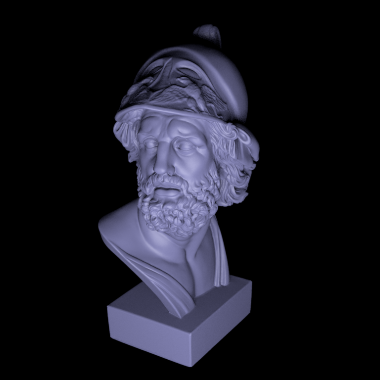
Brute force path tracer (15 points)
===================================
The brute force path tracer's implementation is similar to the witthed integrator but there are two major differences:
- the brute force path tracer doesn't do emitter sampling
- the brute force path tracer uses russian roulette termination probability
The implementation of the brute path tracer could be recursive similarly to whitted.
However, in practice I noticed that it will make it difficult to understand the
different steps to add in order to get a more advanced path tracer in the following parts of the assignment.
Therefore, I used an iterative implementation with the help of PBRT, speciffically with the code in
path.cpp and
the explanation given by 14.5 Path Tracing.
The code consits in an infinite loop in which we iteratively do multiple steps:
1. Shoot a ray and check if there is an intersection
2. Check if the intersection belongs to an emitter in which case we add the emmiter's contribution to the output color scaled by the indirect brdf accumulator (beta).
3. Sample a new outgoing direction for the next iteration
4. Update the indirect brdf accumulator (beta) and the refraction index accumulator (eta)
5. Compute Russian Roulette continuation probability (using beta and eta)
6. Depending on the continuation probability either exit the loop or continue the path tracing by rescaling beta
As we can see below, the resulting images are pretty similar and the code passes the tests associated.
Validation
----------
Cornell box: render time = 3.6m
Veach material test scene: render time = 1.1m
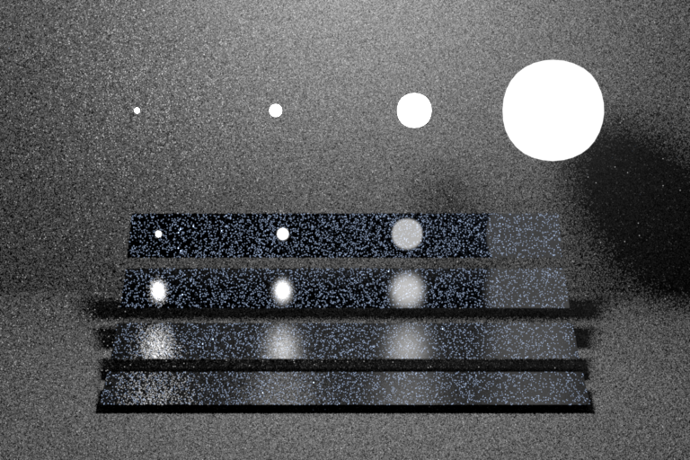
Table test scene: render time = 1.3m
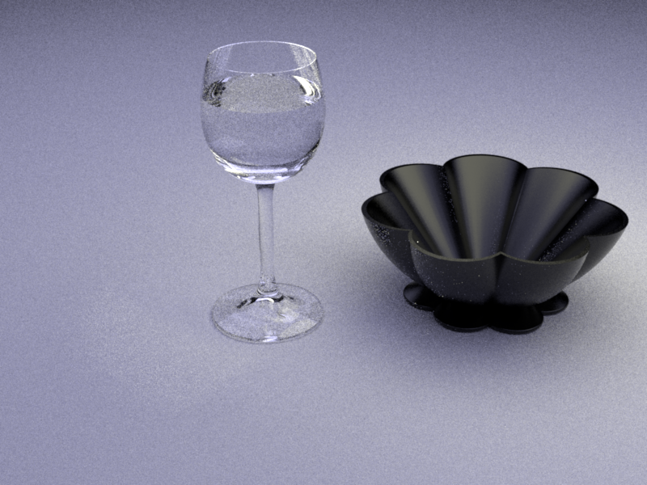
Path tracer with next event estimation (25 points)
==================================================
The path tracer with next event estimation was implemented by adding/modifying some key steps :
1. Only check if the intersection belongs to an emitter in 2 cases :
- at the first iteration
- if the last intersection was on a specular material (using a boolean indicator)
2. Randomely sampling an emitter and adding its contribution to the output color (only for diffuse material) (direct lighting)
Note: The order of the steps in the loop matter. Here we need to account for the emmiter sampling before updating beta (I had a hard time debugging this mistake).
Again, as we can see below, the resulting images are pretty similar and the code passes the tests associated.
Validation
----------
Cornell box: render time = 5.3m
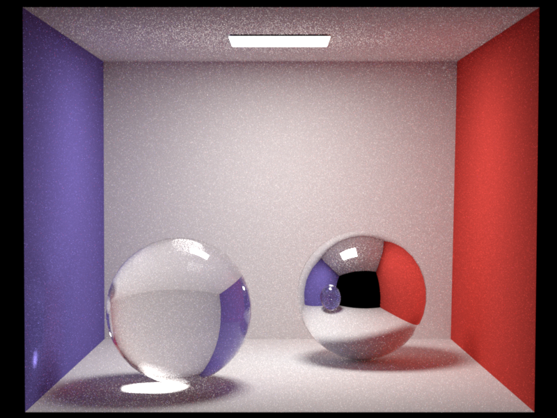
Veach material test scene: render time = 1.9m
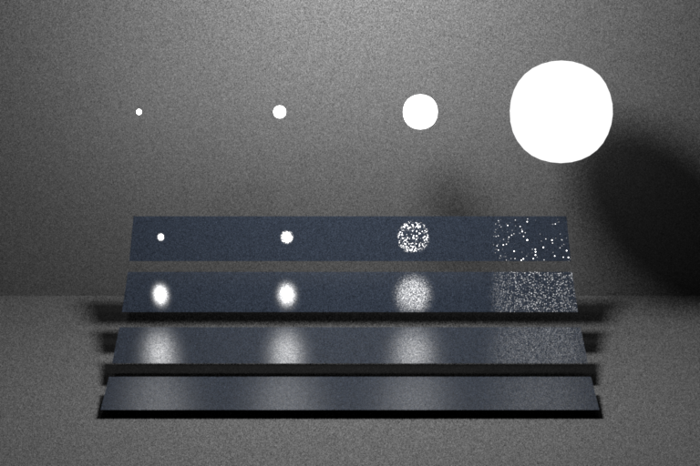
Table test scene: render time = 1.6m
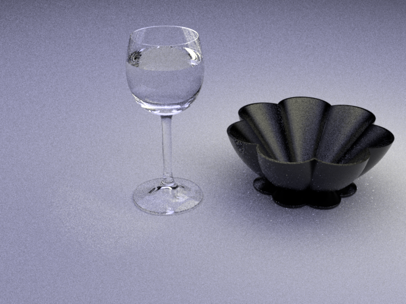
Path tracer with Multiple Importance Sampling (30 points)
=========================================================
The path with multiple importance sampling is also very similar to the path tracer with next event estimation.
Here we only need to add the weights when sampling on a light source and on a diffuse material. For both cases,
the weight is calculated with the ratio of the light's pdf and the brdf's pdf. In this implementation it is
very important to make sure the pdfs are coherently, either with respect to Areas or with respect to Solid Angles.
Throughout the assignments, we have usually implemented calculations
with respect to Solid Angles, thus it made more sense to compute the weights with respect to Solid Angles.
Unfortunately, as we can see below the implementation doesn't work well, one of the weight must be wrong.
Even after hours of debugging I wasn't able to pinpoint the source of the issue. I hope I can still fix this
later on to be able to do the project correctly.
Note: Only 10/15 tests pass for test_direct.xml and only 4/6 tests pass for test_furnace.xml.
The tests 11-15 and 5-6 related to the path_mis path tracer fail which makes the Travis Build fail as well.
I wasn't sure if I had to deactivate them but in doubt I left them as they are. Please note that without these tests
the Travis Build is successful.
Validation
----------
Cornell box: render time = 3.1m
Veach material test scene: render time = 1.2m
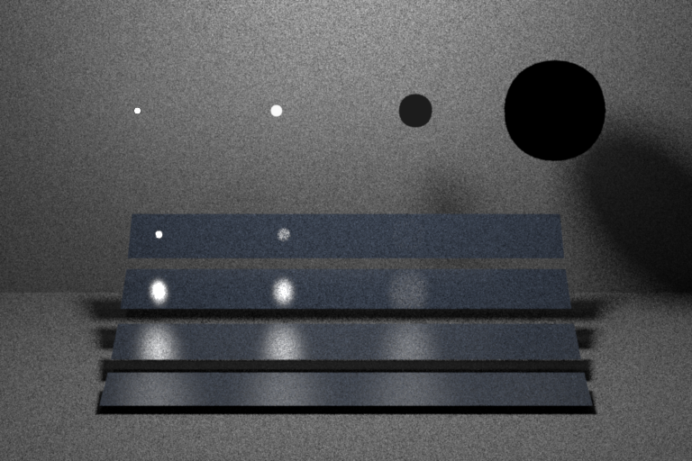
Table test scene: render time = 59.2s
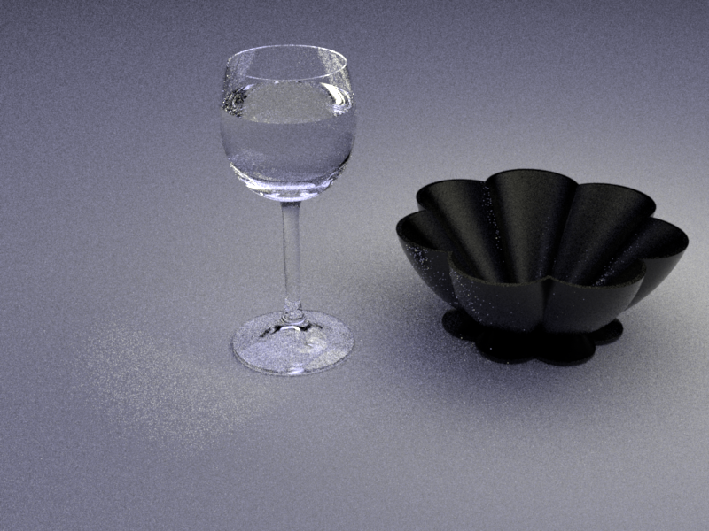
Feedback
========
We would appreciate any comments or criticism to improve the projects in future years--naturally, this part will not be graded. Examples of information that is useful to us includes:
* How much time did you spend on the assignment? How was it divided between designing, coding, and testing?
I spent a lot of time on this assignment (around 6 days most of them close to the deadline to be honest), but as per usual there was more debugging than actual codding.
Designing and Coding must have taken around 1 hour each for each part.
There must have been around 3-7 hours of debbuging for each path tracer (until I gave up for the path_mis).
* What advice should we have given you before you started?
I started pretty slow, the first part of the assignment was relatively easy.
I should have been done with part 1&2 sooner to focus on part 3&4 which are trickier.
* What was hard or surprising about the assignment?
Switching from recursive implementation to iterative implementation wasn't obvious but it definitely made it easier.
With 3 versions of path tracers I kind of got confused at the begining understanding what each of them was supposed to do.
It's also hard to understand where issues come from when debugging sometimes.
* What did you like or dislike? What else would you change?
I liked implementing myself these 3 different path tracers, with adding each time different steps we got to really understand what was going on.
However I am still a bit confused with the path_mis which I couldn't make work properly.
I also liked that we had 3 weeks to complete this assignement and therefore had more lab sessions.
I would definitely give a more detailed explanation of the differences between the 3 path tracers in the assignment.

 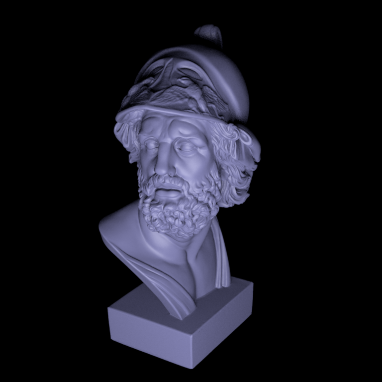
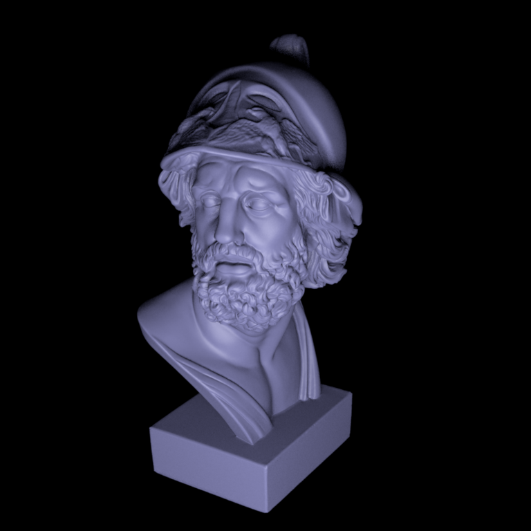

 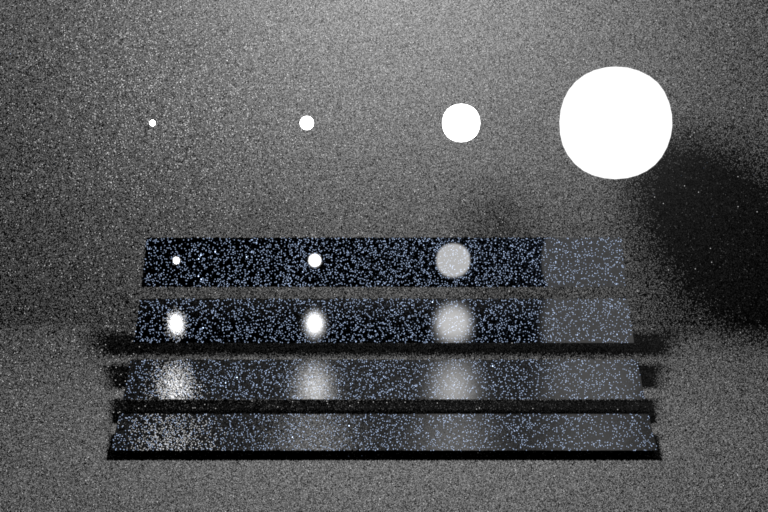
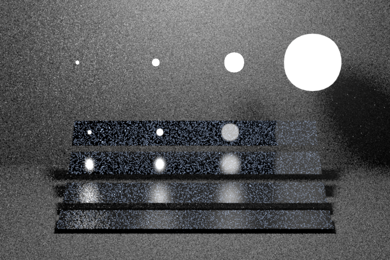
 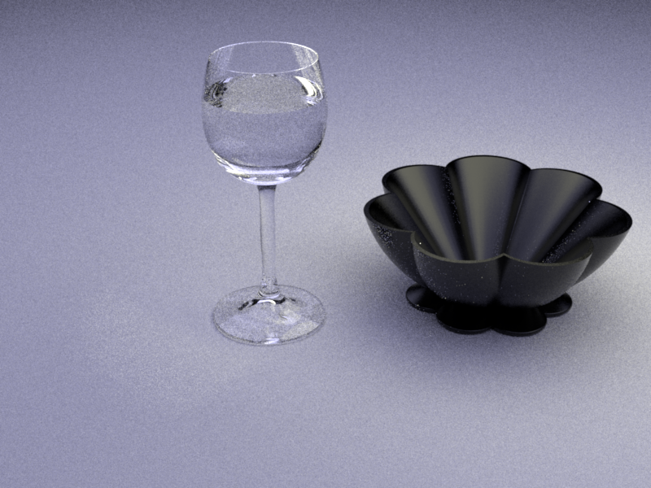
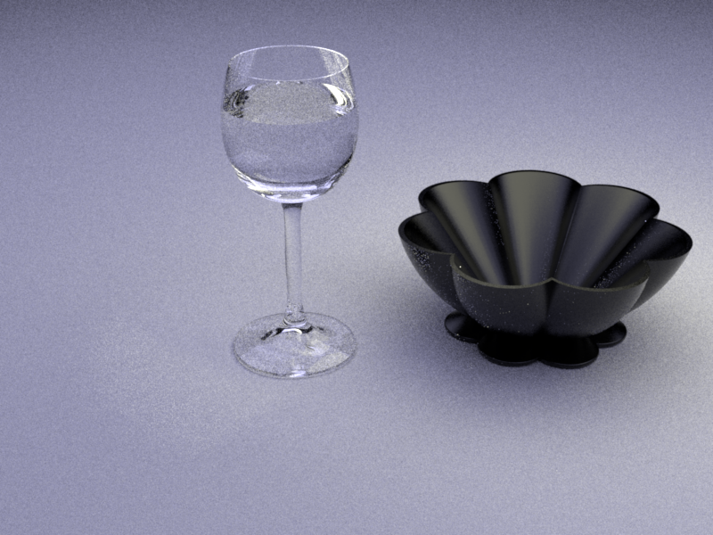
 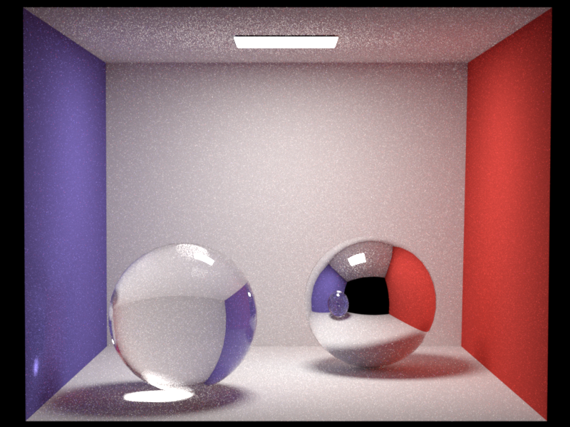
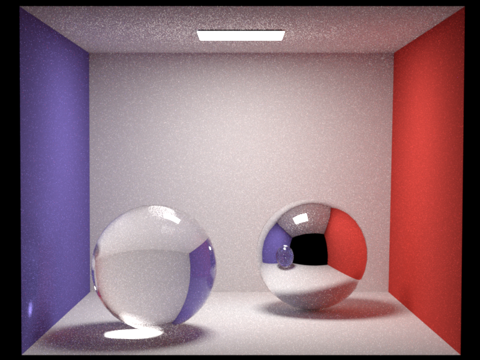
 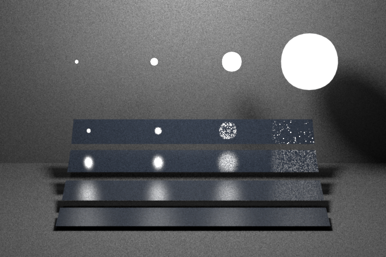
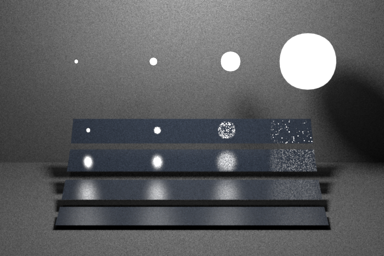
 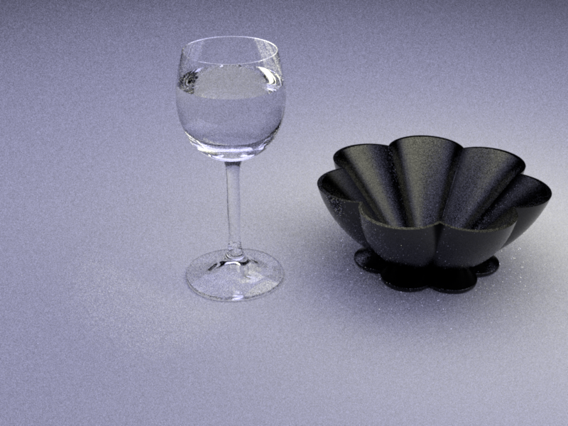
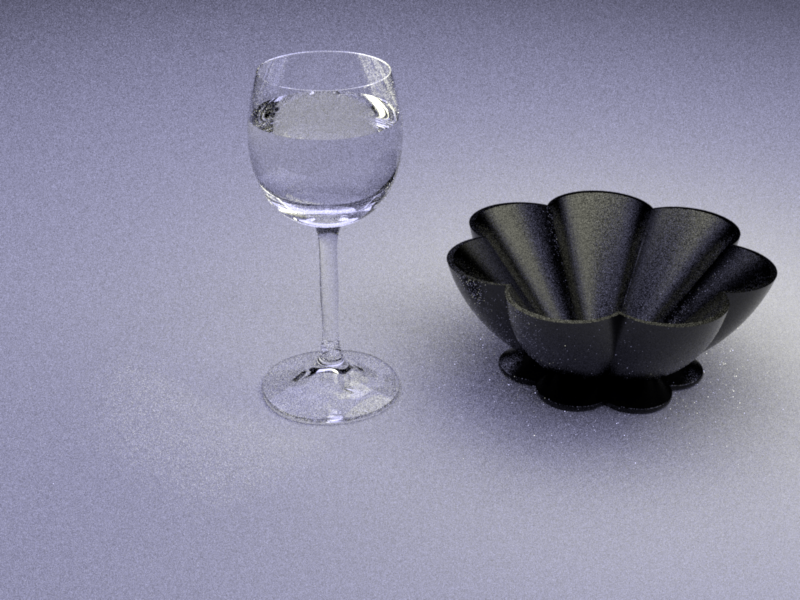

 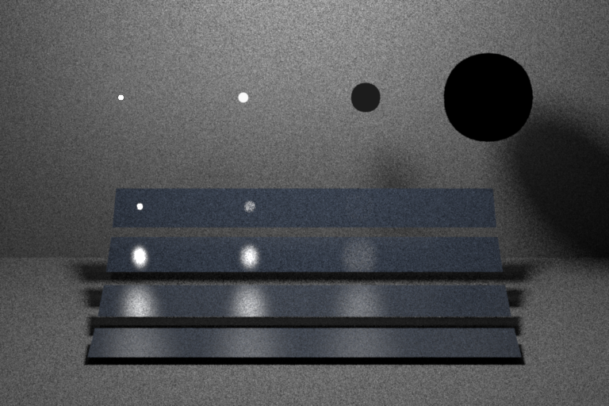
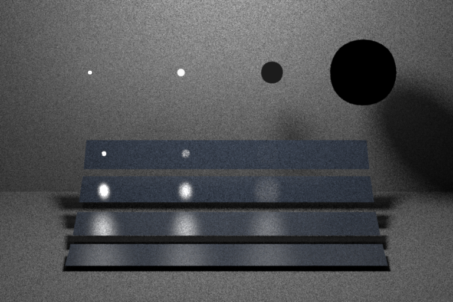